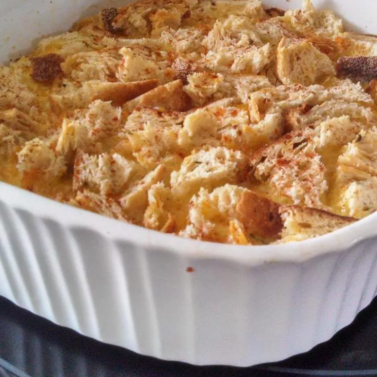

Country Breakfast Casserole

Description
This hearty breakfast casserole is a perfect way to start your day. Packed with protein from eggs and sausage, and loaded with cheese and veggies, it’s a filling dish that can be made ahead of time and baked fresh in the morning. Ideal for brunch gatherings or a cozy family breakfast.
Ingredients
- 1 pound breakfast sausage
- 1 cup diced bell peppers (red, green, or a mix)
- 1 cup diced onion
- 8 large eggs
- 2 cups shredded cheddar cheese
- 2 cups milk
- 1 teaspoon salt
- 1/2 teaspoon black pepper
- 1/2 teaspoon garlic powder
- 1/2 teaspoon paprika
Steps
- Preheat your oven to 350°F (175°C).
- In a large skillet, cook the sausage over medium heat until browned. Drain excess fat.
- Add the diced bell peppers and onion to the skillet and sauté until softened, about 5 minutes.
- In a large bowl, whisk together the eggs, milk, salt, pepper, garlic powder, and paprika.
- Stir in the cooked sausage mixture and half of the cheese.
- Pour the mixture into a greased 9x13 inch baking dish. Top with remaining cheese.
- Bake for 30-35 minutes or until the eggs are set and the top is golden brown.
- Let it cool for a few minutes before slicing and serving.
Home